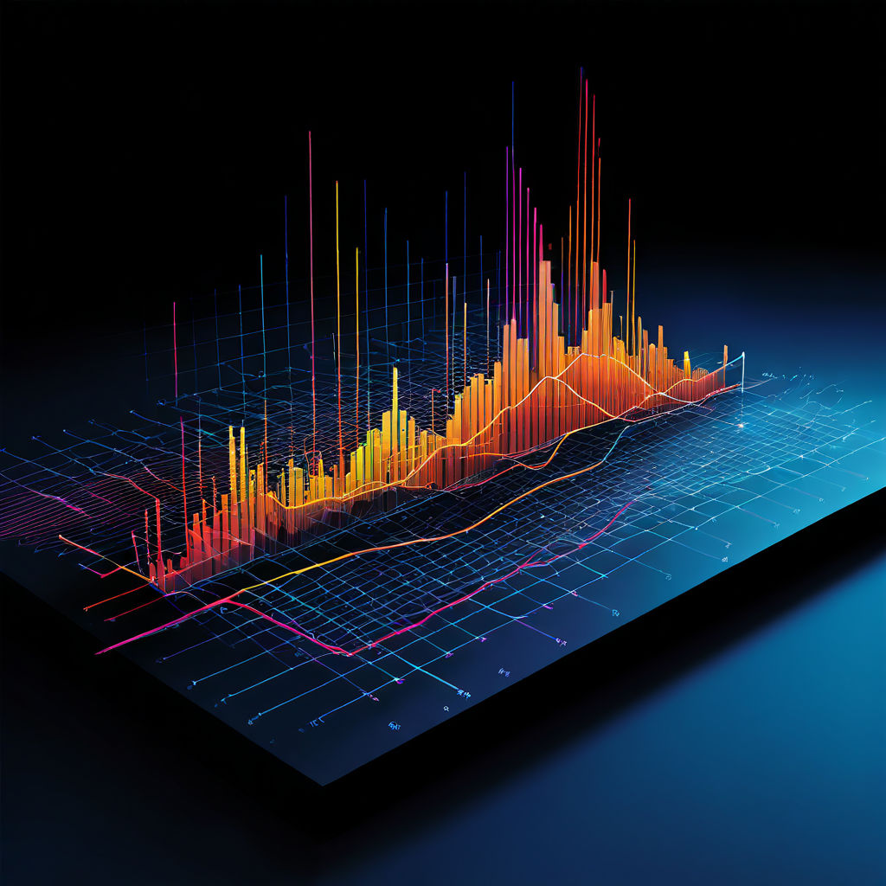

인공지능 이란?
컴퓨터에서 음성 및 작성된 언어를 보고 이해하고 번역하고 데이터를 분석하고
추천하는 기능을 포함하여 다양한 고급 기능을 수행할 수 있는 일련의 기술을 말한다.
보통 인공지능은 머신러닝, 딥러닝으로 나뉘어진다.
머신러닝은 크게 지도학습, 비지도학습, 강화학습으로 나눌 수 있다.
인공지능의 주요 영역
- 의료
- 자율주행
- 금융
일상생활에 활용되는 인공지능
- 표절 적발
- 자율주행자동차
- 콘텐츠 추천 알고리즘
인공지능 서비스
| 서비스 이름 | 웹사이트 | 로고 이미지 | 주요 기능 |
|---|---|---|---|
| Gamma | https://gamma.app/?lng=ko | 특정 주제를 이야기하면 AI를 통해 프리젠테이션을 제작해준다. |
AI 생성 이미지

현재 작곡, 그림, 사진 생성 등 다양한 방식으로 AI를 활용할 수 있다.
아직 하드웨어적 한계를 가지고 있기에, 머리를 대신 잘라주는 AI, 화장을 대신 해주는 AI 등
다양한 분야에 직접적으로 간여하긴 어렵지만, 10년 뒤에는 해당 부분이 많이 변할 것이다.
이에 우리는 변하는 세상을 받아들이고, 발전하는 기술을 더 효과적으로 적용할 수 있는 부분을
고려해야 한다.